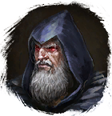
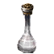
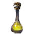
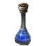
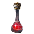

Открыть в интерактивной вики →
| Уровень | 16 |
|---|---|
| Сила (PvE) | 204 |
| Аспект арены | Gherudu |
| Здоровье | 1300 |
| Мана | 900 |
| Выносливость | 500 |
| Респаун | 25 минут - 30 минут |
Локация
Дроп
 (20)
(20)  Оковы Сна
Оковы Сна  Реффа
Реффа 
 Кварцевый ингибитор
Кварцевый ингибитор 
Малая Фляга Знания
Малая Фляга Мощи
Малая Фляга Маны
Малая Фляга Здоровья| Сеты | Синергетики | Эпики | |||
| Оковы Сна Останки Реффа | 20 ур. |  | |||
Прочее:  Кварцевый ингибитор Кварцевый ингибитор  Малая Фляга Мощи Малая Фляга Мощи  Малая Фляга Знания Малая Фляга Знания  Малая Фляга Маны Малая Фляга Маны  Малая Фляга Здоровья Малая Фляга Здоровья | |||||
Умения
- Поджог
- Магическая Искра
- Инкантация — огненная сфера чувствительность к огню